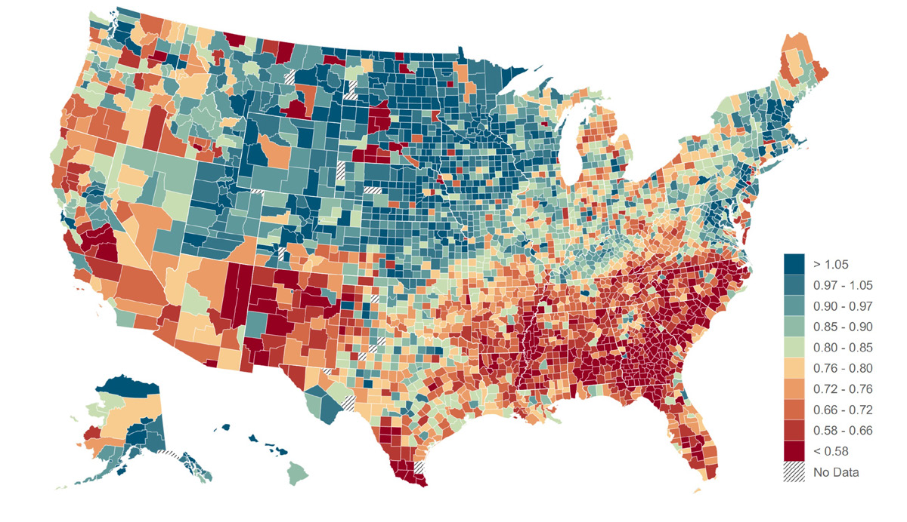
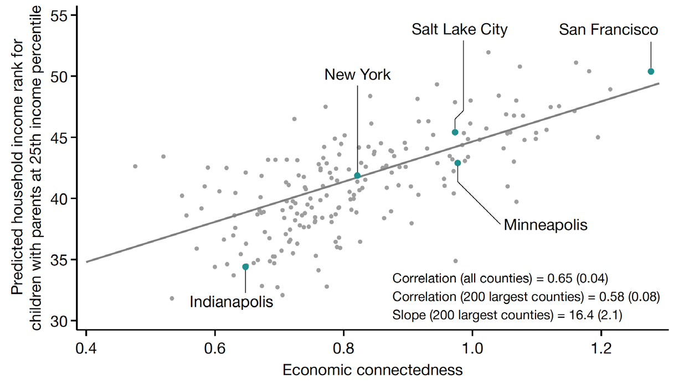
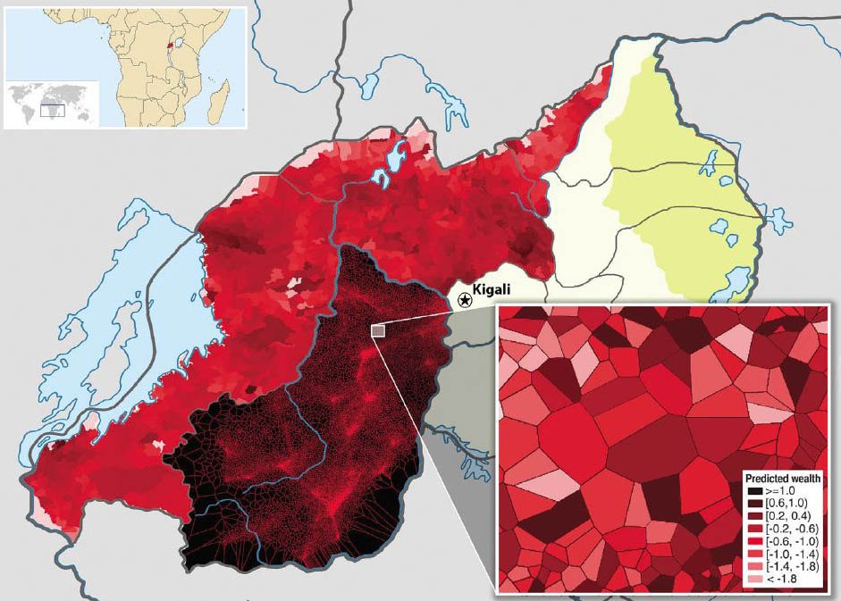
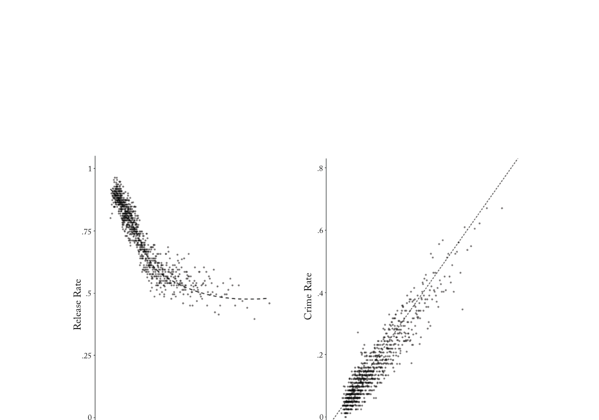

机器学习与社会计算范式革新
AI + 计算社会科学微专业
第三课
郑思尧
上海交通大学 国际与公共事务学院
传统社科研究的标准流程
这个流程运转了一百年，效果很好
理论
提出框架
假说
可检验命题
数据采集
问卷 / 访谈
统计检验
回归 / t 检验
结论
支持 / 拒绝
理论驱动、假说检验、小样本推断——
但它有天花板。
三个天花板
1
规模
一个研究助理一年能编码多少文本？几百篇就是极限。
你有 10 万条微博，传统方法看不完。
2
速度
从数据采集到结果发布，通常以年计。
热点话题结束了，论文还在审稿。
3
一致性
人类编码者之间的不一致性，随规模扩大而恶化。
10 个人标注同一条微博，可能给出 5 种判断。
打破天花板：计算社会科学
Computational Social Science
利用数字痕迹（社交媒体、通话记录、政府文件、搜索记录……）
和计算方法（机器学习、NLP、网络分析……）
研究以前无法研究的社会现象。
2009 年，David Lazer 等 15 位学者在 Science 发表宣言：
“a computational social science is emerging”
Lazer et al., “Computational Social Science,” Science 323, 2009
“Text as Data” — 文本变成数据
Grimmer & Stewart (2013) 提出了一个影响深远的主张：
以前
文本 = 需要人来“读”的东西
质性材料，不能直接做统计
规模上限：几十篇 / 几百篇
→
现在
文本 = 数据的一种
可以量化、分类、建模
规模上限：几百万篇
核心洞见：自动化 ≠ 客观化。所有文本分析都需要研究者的判断。
Grimmer & Stewart, “Text as Data,” Political Analysis 21, 2013
如果你今天要处理 10 万条文本
先不要想论文，先想一个很多单位已经会遇到的真实任务
政务热线 / 客服工单
每天新增几千条留言、投诉和问题反馈。
哪些最紧急？哪些值得优先处理？
社交媒体 / 舆情评论
几万条帖子、评论和转发不断累积。
情绪在变吗？风险在哪里？
开放问卷 / 访谈整理
大家写了很多主观意见，但没人有时间逐条看完。
能不能先自动归类、摘要、提炼重点？
企业报告 / 知识库材料
文档很多、更新很快、信息分散。
怎么让系统先帮你读、找主题、找异常？
真正的新变化：你已经可以让 LLM / agent 先做第一轮读取、分类、摘要和异常筛查。
什么是“范式革新”
不只是
用新工具做旧事
更快地分析数据
自动化重复劳动
而是
范式革新
能问以前问不了的问题
能看到以前看不到的模式
能构建以前无法测量的变量
Thomas Kuhn：范式转移不是改进，是换一种方式看世界。
今天的三个核心问题
1
从小样本到全样本 — 规模革命
当你能分析所有数据，而不只是抽样，研究逻辑会怎么变？
2
从解释到预测 — 预测思维
社科一直追求“为什么”，但有时候“是什么”和“会怎样”更重要。
3
测量不存在的变量 — 测量革新
ML 让我们能构建以前根本无法量化的概念：意识形态、文化含义、情感倾向。
传统研究：抽样推断
总体
你想了解的对象
随机抽样
N = 500–3,000
统计推断
从样本推总体
这个逻辑完全合理——如果你没办法看完所有数据。
但它有代价：
信息损失
你只看了 0.01%
其余 99.99% 丢弃了
当你能分析所有数据
传统抽样
N = 1,000
依赖代表性假设
看不到长尾和极端值
——————
问题受限于数据规模
→
全量分析
N = 11,000,000
无需抽样假设
发现长尾、异常值、微小群体
——————
问题不再受数据限制
关键不只是“更多”——是从切片变成全景。
Case: 7,200 万人的友谊网络预测阶层流动
做了什么：分析 7,200 万 Facebook 用户的 210 亿条友谊关系，构建全美每个社区的“经济连接度”指标（低收入者有多少高收入朋友）。
发现：经济连接度是预测向上流动最强的单一变量（相关度高达 0.65）——比学校支出、种族构成、不平等程度都强。没有全量社交网络数据，这个变量根本不存在。

全美各县的经济连接度分布

经济连接度 vs 向上流动率（200 大县）
Chetty, Jackson, Kuchler, Stroebel et al. · Nature 608, 2022
想一想：如果你能拿到中国的类似全量数据，你会研究什么社会现象？
Case: 手机通话记录预测贫困
Blumenstock, Cadamuro & On (2015) 用卢旺达 150 万手机用户的通话记录，训练模型预测每个人的财富水平。
启示：传统调查只能覆盖几千户，这里覆盖了全国。不是更快做同一件事——是能做到以前做不到的全覆盖。
Blumenstock, Cadamuro & On, Science 350, 2015

手机通话数据预测的卢旺达财富分布
规模带来的质变
从“更多数据”到“不同的研究逻辑”
发现长尾
极端值和稀有事件浮出水面。1% 的用户传播了 80% 的假新闻——抽样 1,000 人几乎不可能发现这个模式。
全景视角
从切片到全貌。不是“这 500 个人怎么想”，而是“一个国家 70 年的政治修辞怎么变”。
实时追踪
从快照到连续监测。不用等 3 年做一次调查，而是每天、每小时追踪公共舆论。
当你能分析所有数据，
瓶颈不再是“能采集多少”，
而是"能问什么问题"。
规模革命不是让旧研究跑得更快，
而是让全新的研究问题成为可能。
接下来 → 第二个范式转变
社科的默认范式：因果解释
社会科学的核心追求：X 为什么导致 Y？
这很重要。但——这是唯一重要的事吗？
预测有什么用？
有些政策问题的核心不是“为什么”，而是“谁”和“什么时候”
医疗
哪些病人出院后 30 天内会再入院？ → 提前干预
司法
哪些嫌疑人保释后不会逃跑？ → 减少不必要的羁押
公共卫生
哪个社区下周会爆发疫情？ → 提前部署资源
Kleinberg et al. (2015)：这类问题可以叫“预测型政策问题”——
政策的关键是先准确判断资源给谁，而不一定先解释全部因果机制。
Case: 算法揭示法官的系统性偏差
Kleinberg, Lakkaraju, Leskovec, Ludwig & Mullainathan (2018)
用 ML 预测纽约市 75 万名被告的逃跑/再犯风险。
算法预测：如果按算法建议释放低风险被告 → 犯罪率不变，但关押人数减少 25%
揭示偏差：法官对少数族裔系统性地设定过高保释金——算法比人类更一致、更公平
启示：这里预测本身就是发现。不需要知道“为什么”法官有偏差，只要预测足够准确，就能用对比揭示问题。
Kleinberg et al., “Human Decisions and Machine Predictions,” QJE 133(1), 2018

左：法官释放率 vs 预测风险 右：实际犯罪率 vs 预测风险
Case: 160 个团队预测人生结局——结果令人意外
Salganik et al. (2020) 发起 Fragile Families Challenge：给 160 个研究团队同一份丰富的面板数据（4,242 个家庭、12,942 个变量、15 年追踪），预测 6 个人生结局：GPA、是否留级、物质困难、被驱逐、失业、是否受训练。
预测能做到的
像 GPA 这样的结果
最多能解释约 20% 的差异
预测做不到的
像“是否被驱逐”这样的结果
最多也只能解释约 5% 的差异
真正的启示
160 个团队的最优模型
彼此差异极小 → 瓶颈不在算法，在数据
对社科的意义：预测有用，但不是万能。复杂的社会结果有不可约简的不确定性——这本身就是一个重要的科学发现。
Salganik et al., “Measuring the predictability of life outcomes,” PNAS 117(15), 2020
预测 vs 解释：不是对立
解释（Explanation）
回答 WHY
目标：理论建构
优先：无偏估计
"教育为什么影响收入"
+
预测（Prediction）
回答 WHAT / WHO
目标：准确判断
优先：泛化能力
"谁最可能辍学"
两者不是竞争关系。好的研究设计经常两者兼用——
先用预测模型定位问题，再用因果推断解释问题。
想一想你关注的一个政策领域——瓶颈是预测（"对谁做"）还是解释（"为什么做"）？
什么时候值得用 ML / agent 做预测？
先问一句：你面对的是不是“先处理谁、先看哪里、先把什么变成标签”的问题？
优先级排序
资源有限，先处理谁？
不是所有人都能先服务、先跟进、先干预。
模型先帮你排优先级。
例：哪些工单、病人、学生最需要优先关注
自动打标签
先把材料变成分数或标签
文本、图像或记录先被转成
情绪、满意度、风险级别等变量。
例：把评论变成“正面 / 中性 / 负面”或“高风险 / 低风险”
先筛查再深究
先找到重点，再解释原因
先用模型快速筛出重点人群、文本或地区，
再让专家进一步判断。
例：先找高风险案例，再做人工研判或正式评估
学术上这类用途可对应政策定向、变量构建和研究辅助。
对今天这批学习者，更重要的是先记住：模型常常先帮你“筛”，人再决定怎么“用”。
预测不是社科的敌人。
当政策问题的核心是“对谁做”而不是“为什么做”时，
准确预测就是最有价值的答案。
解释和预测是互补的，不是对立的。
接下来 → 第三个范式转变
先看一个今天就能上手的 LLM / agent 流程
把“看不完的材料”先变成“可处理的标签”
原始材料
工单、评论、报告、访谈
LLM / agent 初读
摘要、分类、找异常
结构化输出
主题、情绪、风险分数
人工复核 + 动作
谁先处理、哪里追问、何时升级
这就是“测量革新”最直观的样子：先把模糊、零散、看不完的信息，变成可比较、可筛查、可追踪的变量。
接下来再看：这种能力在学术上为什么重要，它和传统测量有什么本质差别。
传统测量的困境
社科研究中最重要的概念，往往最难测量
意识形态
传统方法：投票记录打分或问卷自报。受限于有公开投票记录或愿意回答问卷的人。
情感倾向
传统方法：人工编码。成本高、速度慢、编码者之间不一致。
文化含义
传统方法：深度访谈或民族志。几乎无法大规模量化或跨时间比较。
政策框架
传统方法：内容分析手册。定义因人而异，跨国不可比。
共同问题：概念重要，但测量手段受限。
把模糊概念变成可用标签的三条路
1
先教机器
先给几十或几百条示例，
告诉系统“什么算正面、什么算风险、什么算投诉”。
然后把同样标准扩展到更大数据。
学术上常叫：有监督分类
2
先让数据分组
你暂时不规定标签，
让系统先找“哪些内容彼此更像”。
它适合用来发现你原本没想到的结构。
学术上常叫：无监督发现
3
先问大模型 / 让 agent 执行
你不先准备训练集，
直接用自然语言描述任务，让 LLM 或 agent 先判断。
速度快，但更依赖提示设计和人工复核。
常见形式：LLM / agent 零样本判断
真实工作里，这三种方法往往不是三选一，而是串起来用。
Case: 你关注谁，暴露了你的立场
Barberá (2015) 提出：Twitter 用户的关注列表就是一种“投票行为”——关注了谁，等价于一次意识形态投射。
用户 A 关注了
FOX、Trump、NRA
根据关注对象
推断立场坐标
保守派 (+1.2)
与投票记录高度吻合
测量革新：传统方法只能给国会议员打分（因为只有他们有可用的投票记录）。
这个方法可以给任何 Twitter 用户打分——数百万普通公民第一次有了意识形态坐标。
Barberá, “Birds of the Same Feather Tweet Together,” Political Analysis 23(1), 2015
Case: 国会的语言正在分裂
Gentzkow, Shapiro & Taddy (2019) 用 ML 分析 1873–2016 年美国国会所有发言记录，训练模型仅凭一段话的用词就判断说话者的党派。
1873 年
两党用词几乎无法区分。
模型准确率接近随机猜测（~55%）。
语言上，两党是“一家人”。
→
2016 年
模型准确率飙升至 ~83%。
一段话就能判断是共和党还是民主党。
语言本身变成了党派标签。
测量革新：ML 把“党派极化”从一个模糊的叙事变成了一条可量化的 140 年趋势线。
不需要问卷、不需要投票数据——语言本身就是证据。
Gentzkow, Shapiro & Taddy, “Measuring Group Differences in High-Dimensional Choices,” Econometrica 87(4), 2019
Case: 打破回音室反而加剧了极化
Bail et al. (2018) 在 Twitter 上做了一个田野实验：让民主党和共和党用户关注一个发布对立观点的机器人账号，持续一个月。
共和党用户
关注自由派机器人
一个月后
更保守了
态度没有趋中
ML 的角色
自动化机器人 + NLP 测量态度变化 + 自动抓取关注网络
测量创新
用 Barberá (2015) 方法将用户意识形态量化，追踪实验前后的变化
范式意义：ML 不只是“测量”——它让大规模社交实验成为可能。
没有自动化机器人和 NLP 态度测量，这个实验根本无法执行。
Bail et al., “Exposure to opposing views on social media can increase political polarization,” Science 361, 2018
测量革新的共同模式
三个案例，同一个逻辑：把“行为痕迹”变成“测量变量”
1
Barberá (2015)：关注列表 → 意识形态
行为痕迹：你关注了谁。 产出变量：350 万普通用户的意识形态得分。
2
Gentzkow et al. (2019)：国会用词 → 党派极化
行为痕迹：议员怎么说话。 产出变量：140 年连续的极化指数。
3
Bail et al. (2018)：社交互动 → 态度变化
行为痕迹：关注/互动模式。 产出变量：实验前后的意识形态位移。
共同逻辑：人们无意中留下的数字痕迹（关注、发言、点击），
被 ML 转化为以前不存在的测量变量。
你的研究领域里，有哪些"行为痕迹"可以被转化为测量变量？
从发现到确认：无监督学习的角色
有时候你不知道数据里有什么——这也是一种测量
1. 无监督发现
把 10 万条文本扔进主题模型 → 发现 20 个主题
2. 研究者审查
哪些主题有理论意义？哪些只是噪音？
3. 大样本验证
用有监督方法在更大数据集上确认发现
Molina & Garip (2019)：ML 可以用于归纳性发现——先让数据说话，再用理论解释。
Molina & Garip, “Machine Learning for Sociology,” Annual Review of Sociology 45, 2019
Case: ML 发现社会流动的“隐藏类型”
Molina & Garip (2019) 使用聚类算法分析墨西哥-美国移民数据，发现传统理论框架遗漏的群体特征。
传统回归分析
看单一变量的平均效应
“教育↑ → 移民概率↓”
平均效应掩盖了群体异质性
→
ML 聚类分析
发现 4 种移民“型态”
每种是多个变量的组合
传统方法看不到的子群体
例子 A
高教育 + 城市 + 正规渠道
→ 合法移民
例子 B
低教育 + 农村 + 亲属网络
→ 非正式迁移路径
研究里还发现了其他类型。真正要记住的不是“总共有几类”，
而是平均效应背后，可能藏着多条不同的组合路径。
核心启示：ML 能发现理论没预料到的组合模式，但这类发现必须标注为探索性，不能直接当作确认性结论。
ML 让我们能构建
以前根本无法量化的概念。
意识形态、文化含义、情感倾向——
这些不再是“只能定性讨论”的模糊概念，
而是可以大规模、跨时间、跨国比较的变量。
接下来 → 方法论反思
ML 在研究中的三种角色
先别急着记术语，先分清你现在把 ML 当成什么工具。
1. 测量工具
把原本模糊、难量化的东西变成分数或标签。
例：情感分析、意识形态打分、文化含义追踪。
先问：你测到的真的是你想测的吗？
2. 发现工具
先从数据里找出你原本没预设到的结构或异常。
例：主题模型、聚类、异常检测。
先问：这是真实模式，还是数据噪声？
3. 预测工具
提前判断谁更值得关注、哪里更可能出问题。
例：政策定向、风险评估、变量构建。
先问：换个场景、时间或部门还准不准？
认清角色后，验证重点也会变：测量看效度，发现看模式真假，预测看跨场景稳定性。
把 LLM / ML 用进工作前，先问这四个问题
一：结果靠谱吗？
1. 你测到的是你真正想测的东西吗？
对应：效度。高准确率不等于高效度，模型可能学到的是捷径。
2. 换个时间、部门或城市还准吗？
对应：泛化与可复现性。一次跑通，不代表处处都成立。
二：使用方式稳妥吗？
3. 你能向别人解释它为什么这么判吗？
对应：可解释性。尤其在政策或管理场景里，黑箱往往不够。
4. 它会不会放大偏见、伤到某些人？
对应：伦理与偏见。数据代表谁、不代表谁，决定了结果会偏向谁。
好用的工具，不等于可以不经复核地直接使用。
对这批学习者来说，最重要的不是先学会“最复杂的模型”，而是先学会“怎样安全地用它”。
讨论
问题 1：你的研究中，ML 最可能扮演什么角色——测量工具、发现工具、还是预测工具？
问题 2：如果你能分析全量数据而不只是抽样，你的研究问题会怎么变？
问题 3：你最担心的风险是什么——效度、可解释性、还是伦理？
今日要点
1
ML 不只是加速旧研究——它改变了能问什么问题
从“用新工具做旧事”到“能问以前问不了的问题”。这是范式革新，不是效率提升。
2
规模革命让你从抽样到普查，看见长尾和全貌
7,200 万人的友谊网络、70 年演讲、150 万通话记录——全量分析揭示了抽样无法发现的模式。
3
预测思维在政策问题中有独立价值
解释和预测是互补的。当问题的核心是“对谁做”而不是“为什么做”，预测就是答案。
4
LLM / agent 让这些能力开始日常可用，但复核仍是关键
今天很多单位已经能用大模型做初筛、分类、摘要和风险提示。但“能自动做”不等于“可以直接信”。
下节课预告
第四课 有监督机器学习技术
今天讨论了 ML 改变了什么，
下节课回到技术层面——
具体怎么做分类和标注，以及怎样把大模型当作标注助手。
课前思考：你自己的研究问题里，有哪些概念需要被“测量”？
带着这个问题来上课